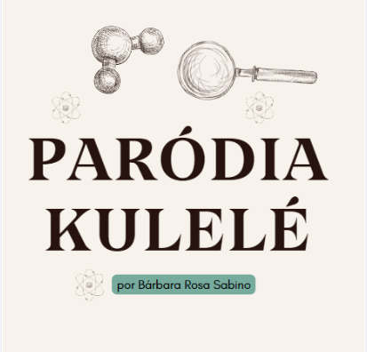

Ciências da Natureza:

A música é um canal poderoso, especialmente para a compreensão de conceitos complexos, despertando o desejo de explorar cada vez mais o que se fala. Nesta atividade, criamos uma paródia sobre Química Orgânica, uma combinação entre criatividade e conhecimento. Tarefas assim são importantes para sairmos do "básico", sem explicações extensas e listas de exercícios. Nelas, conseguimos descontrair e interagir.